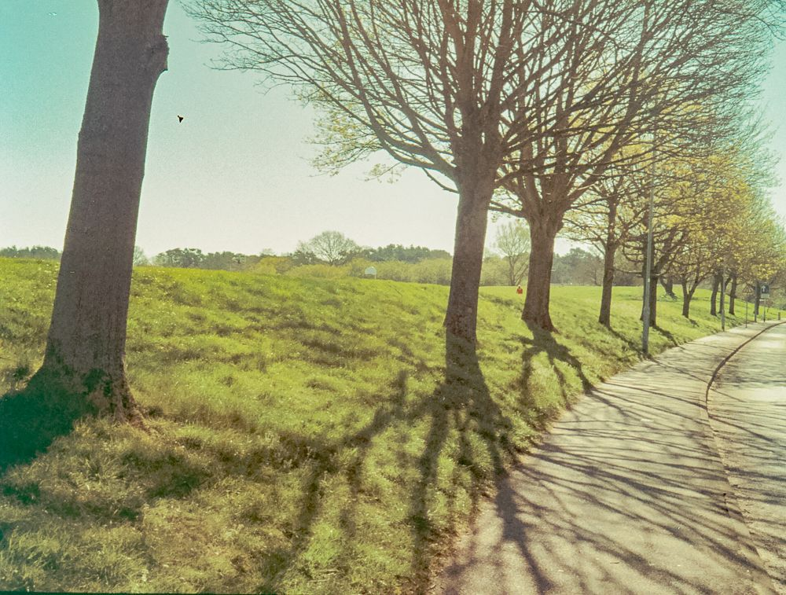
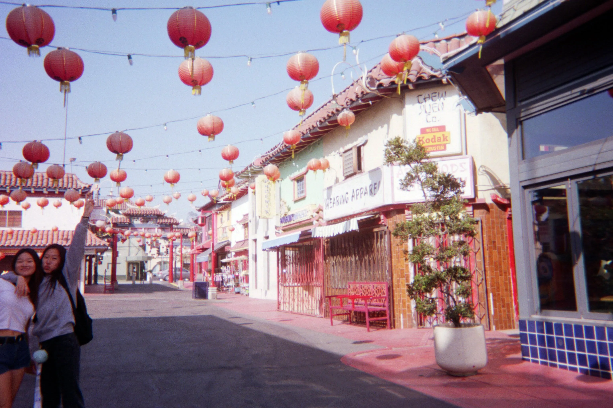
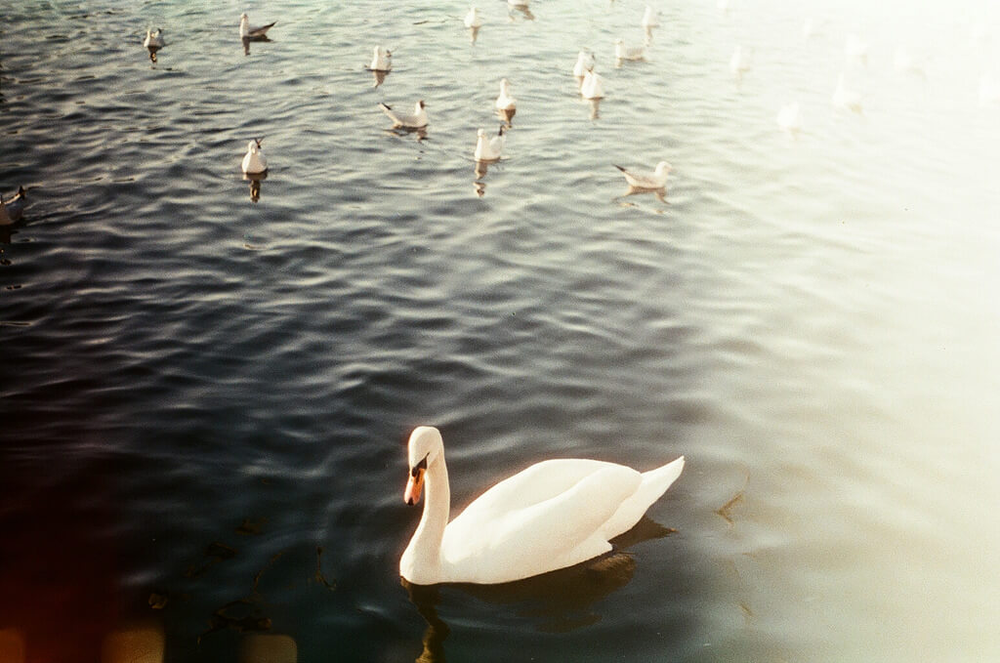
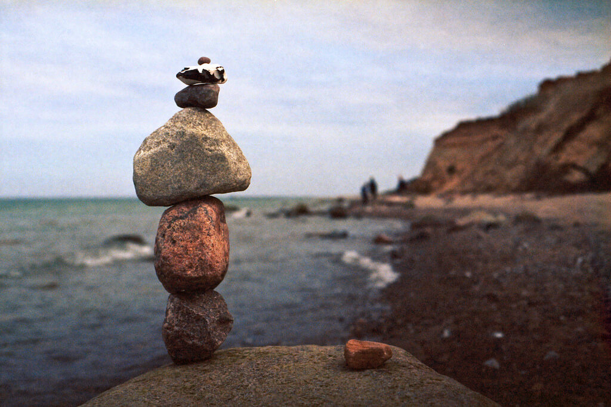
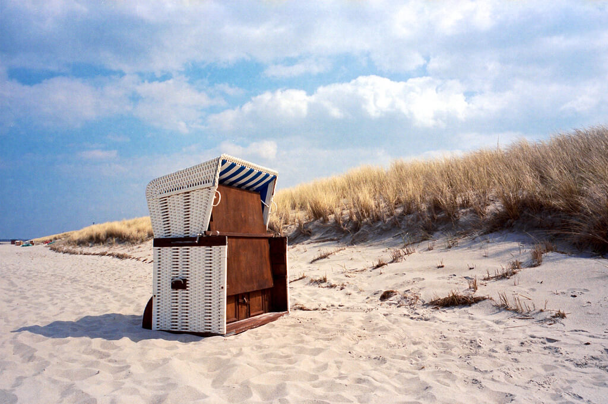

About





Kamera,
Where simplicity meets innovation in the world of photography. At Kamera, we believe in offering high-quality, easy-to-use digital cameras that empower both amateur and seasoned photographers to capture life’s most precious moments. Our cameras are designed with a minimalistic yet seamless design, offering the perfect balance of functionality and style.Whether you’re taking snapshots for fun or creating artistic visual stories, Kamera provides a range of features that make your photography experience effortless. From compact cameras with advanced shooting modes to cameras with sleek designs and user-friendly interfaces, we cater to every photographer's needs. With Kamera, every picture tells a unique story.
Explore our collection and discover the perfect camera for your adventures today.